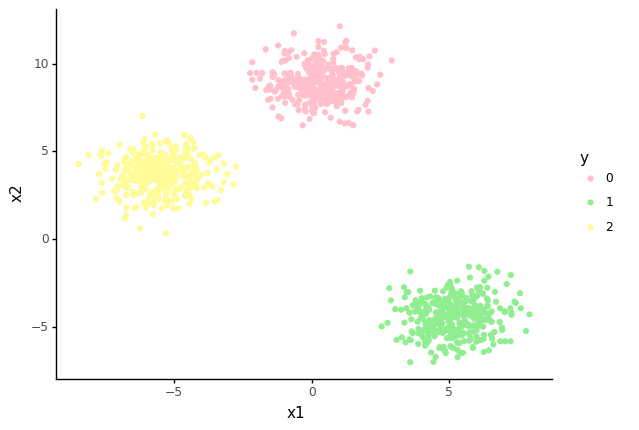
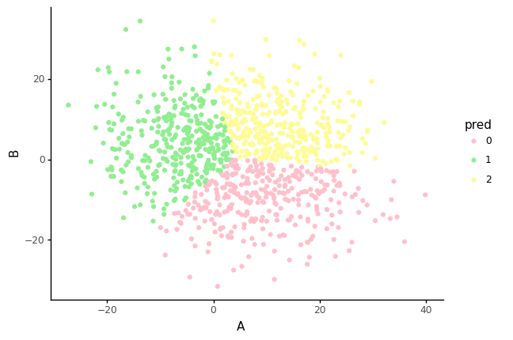

Dunn index
There are several ways to measure the robustness of a clustering algorithm. Three commonly used metrics are the Dunn index, Davis-Bouldin index and Silhoutte index.
But before we start, let's introduce some concepts.
We are interested in clustering algorithms for a dataset \(\mathcal{D}\) with \(N\) elements in a \(n\)-dimensional real space, that is:
\[ \mathcal{D} = {x_1, x_2, \ldots, x_N} \in \mathbb{R}^p \]The clustering algorithm will create a set \(C\) of \(K\) distinct disjoint groups from \(\mathcal{D}\) \(C={c_1, c_2, \ldots, c_k}\), such that:
\[ \cup_{c_k\in C}c_k=\mathcal{D} \\ c_k \cap c_l \neq \emptyset \forall k\neq l \]Each group (or cluster) \(c_k\), will have a centroid, \(\bar{c}_k\), which is the mean vector of its elements such that:
\[ \bar{c}_k=\frac{1}{|c_k|}\sum_{x_i \in c_k}x_i \]We will also make use of the dataset's mean vector, \(\bar{\mathcal{D}}\), defined as:
\[ \bar{\mathcal{D}}=\frac{1}{N}\sum_{x_i \in X}x_i \]Dunn index
The Dunn index[^1] aims at quantifying the compactness and variance of the clustering. A cluster is considered compact if there is small variance between members of the cluster. This can be calculated using \(\Delta(c_k)\), where
\[ \Delta(c_k) = \max_{x_i, x_j \in c_k}{d_e(x_i, x_j)} \]and \(d_e\) is the Euclidian distance defined as:
\[ d_e=\sqrt{\sum_{j=1}^p (x_{ij}-x_{kj})^2}. \]A cluster is considered well separated if the cluster are far-apart. This can quantified using
\[ \delta(c_k, c_l) = \min_{x_i \in c_k}\min_{x_j\in c_l}{d_e(x_i, x_j)}. \]Given these quantities, the Dunn index for a set of clusters \(C\), \(DI(C)\), is then defined by:
\[ DI(C)=\frac{\min_{c_k \in C}{\delta(c_k, c_l)}}{\max_{c_k\in C}\Delta(c_k)} \]A higher Dunn Index will indicate compact, well-separated clusters, while a lower index will indicate less compact or less well-separated clusters.
We can now try to calculate the metric for the dataset we've created previously.
Let's simulate some data and apply the Dunn index from scratch.
First, we will create a compact and well-separated dataset using the make_blobs method in scikit-learn.
We will create a dataset of \(\mathbb{R}^2\) data (for easier plotting), with three clusters.
from sklearn.datasets import make_blobs
X, y = make_blobs(n_samples=1000,
centers=3,
n_features=2,
random_state=23)
import pandas as pd
from plotnine import *
from plotnine.data import *
from plotutils import *
data = pd.DataFrame(X, columns=["x1", "x2"])
data["y"] = y
data["y"] = data.y.astype('category')
ggplot(data=data) +\
geom_point(mapping=aes(x="x1", y="x2", colour="y")) + \
scale_color_manual(values=[colours[0], colours[1], colours[2]]) + theme_classic()

<ggplot: (322716386)>
We now cluster the data[^2] and we will have, as expected three distinct clusters, plotted below.
from sklearn import cluster
k_means = cluster.KMeans(n_clusters=3)
k_means.fit(data)
y_pred = k_means.predict(data)
prediction = pd.concat([data, pd.DataFrame(y_pred, columns=['pred'])], axis = 1)
clus0 = prediction.loc[prediction.pred == 0]
clus1 = prediction.loc[prediction.pred == 1]
clus2 = prediction.loc[prediction.pred == 2]
k_list = [clus0.values, clus1.values,clus2.values]
Let's focus now on two of these cluster, let's call them \(c_k\) and \(c_l\).
ck = k_list[0]
cl = k_list[1]
We know we have to calculate the distance between the points in \(c_k\) and \(c_l\). We know that the len(ck)=len(cl)=333 we create
import numpy as np
values = np.ones([len(ck), len(cl)])
values
array([[1., 1., 1., ..., 1., 1., 1.],
[1., 1., 1., ..., 1., 1., 1.],
[1., 1., 1., ..., 1., 1., 1.],
...,
[1., 1., 1., ..., 1., 1., 1.],
[1., 1., 1., ..., 1., 1., 1.],
[1., 1., 1., ..., 1., 1., 1.]])
For each pair of points, we then get the norm of \(x_i-x_j\). For instance, for \(i=0\in c_k\) and \(i=1\in c_l\), we would have:
values[0, 1] = np.linalg.norm(ck[0]-cl[1])
print(ck[0], cl[1])
print(values[0, 1])
[ 5.84161203 -3.98182959 1. 0. ] [-5.24664039 5.60223387 2. 1. ]
14.724252577342527
The calculation of \(\delta(c_k, c_l)\) between two clusters \(c_k\) and \(c_l\) will be defined as follows:
import numpy as np
def δ(ck, cl):
values = np.ones([len(ck), len(cl)])
for i in range(0, len(ck)):
for j in range(0, len(cl)):
values[i, j] = np.linalg.norm(ck[i]-cl[j])
return np.min(values)
So, for our two clusters above, \(\delta(c_k, c_l)\) will be:
δ(ck, cl)
8.13474311744193
Within a single cluster \(c_k\), we can calculate \(\Delta(c_k)\) similarly as:
def Δ(ci):
values = np.zeros([len(ci), len(ci)])
for i in range(0, len(ci)):
for j in range(0, len(ci)):
values[i, j] = np.linalg.norm(ci[i]-ci[j])
return np.max(values)
So, for instance, for our \(c_k\) and \(c_l\) we would have:
print(Δ(ck))
print(Δ(cl))
6.173844284636552
6.726025773561468
We can now define the Dunn index as
def dunn(k_list):
δs = np.ones([len(k_list), len(k_list)])
Δs = np.zeros([len(k_list), 1])
l_range = list(range(0, len(k_list)))
for k in l_range:
for l in (l_range[0:k]+l_range[k+1:]):
δs[k, l] = δ(k_list[k], k_list[l])
Δs[k] = Δ(k_list[k])
di = np.min(δs)/np.max(Δs)
return di
and calculate the Dunn index for our clustered values list as
dunn(k_list)
0.14867620697065728
Intuitively, we can expect a dataset with less well-defined clusters to have a lower Dunn index. Let's try it. We first generate the new dataset.
X, y = make_blobs(n_samples=1000,
centers=3,
n_features=2,
cluster_std=10.0,
random_state=24)
df = pd.DataFrame(X, columns=['A', 'B'])
k_means = cluster.KMeans(n_clusters=3)
k_means.fit(df)
#K-means training
y_pred = k_means.predict(df)
prediction = pd.concat([df,pd.DataFrame(y_pred, columns=['pred'])], axis = 1)
prediction["pred"] = prediction.pred.astype('category')
ggplot(data=prediction) +\
geom_point(mapping=aes(x="A", y="B", colour="pred")) + \
scale_color_manual(values=[colours[0], colours[1], colours[2]]) + theme_classic()

<ggplot: (314277879)>
clus0 = prediction.loc[prediction.pred == 0]
clus1 = prediction.loc[prediction.pred == 1]
clus2 = prediction.loc[prediction.pred == 2]
k_list = [clus0.values, clus1.values,clus2.values]
dunn(k_list)
0.019563892388205984